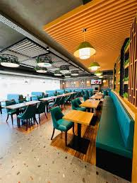
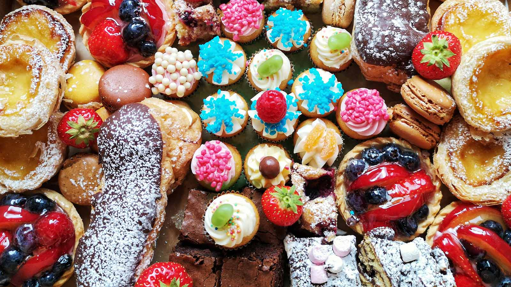
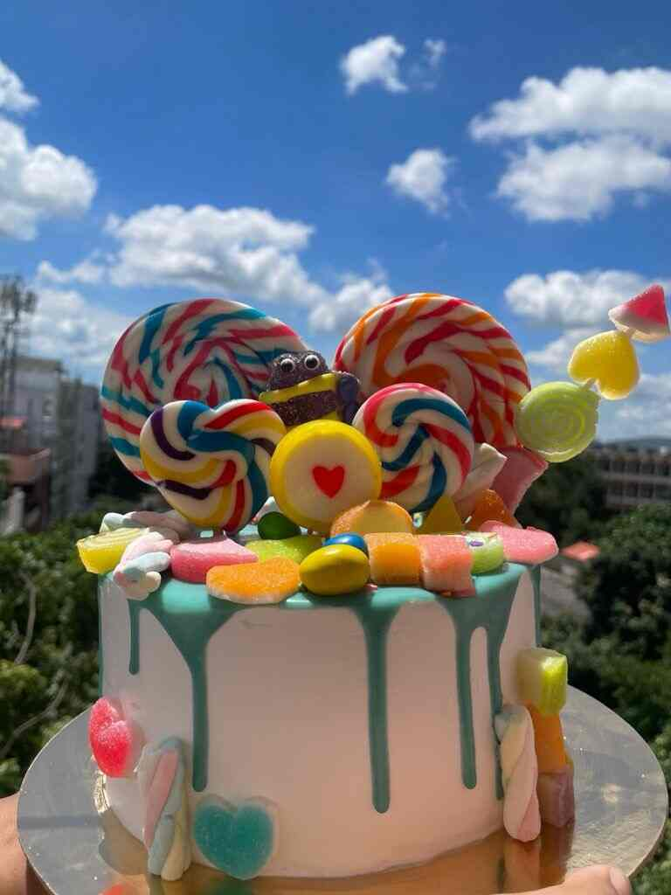
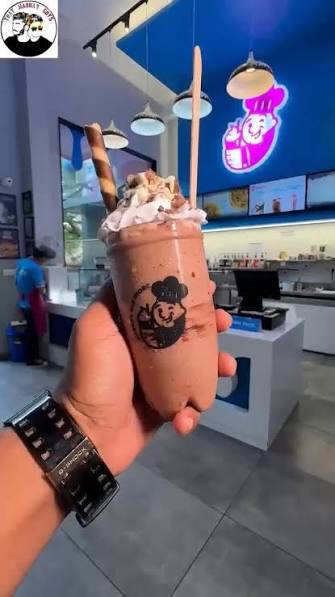
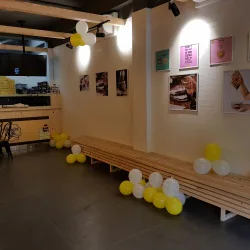
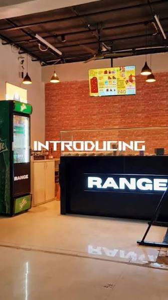

01 — ICE CREAMS
Café Ice Magic
Add this dessert stop to your list when you're craving a cold and sweet treat.

Ice creams, waffles, cakes and sweet cravings worth exploring around Vijayawada.
Explore Desserts ↓Some days call for a scoop of ice cream. Other days, it's waffles, brownies, cakes or a cold shake.
Discover sweet stops around the city and add a little sweetness to your outing.
Explore dessert spots and sweet treats to add to your Vijayawada food list.

Add this dessert stop to your list when you're craving a cold and sweet treat.

A sweet-stop option to explore when you want to make dessert part of your city outing.

A dessert stop to look into when you're planning a sweet break around Vijayawada.

A waffle stop to consider when you're in the mood for a warm, chocolatey dessert.

Add this dessert destination to your list for your next sweet outing.
Ice creams, sundaes and chilled dessert treats.
Waffles and chocolate-inspired sweet bites.
Cold shakes and sweet drinks for your dessert break.
Check the latest menus, locations and opening hours before visiting.
← Back to Food Guide